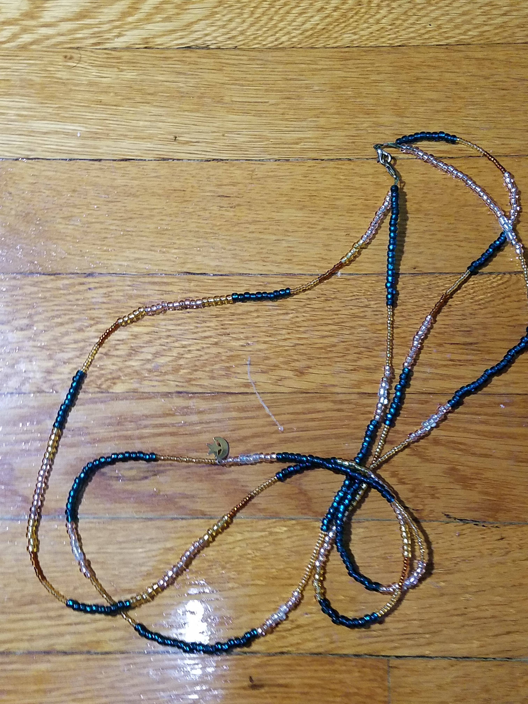
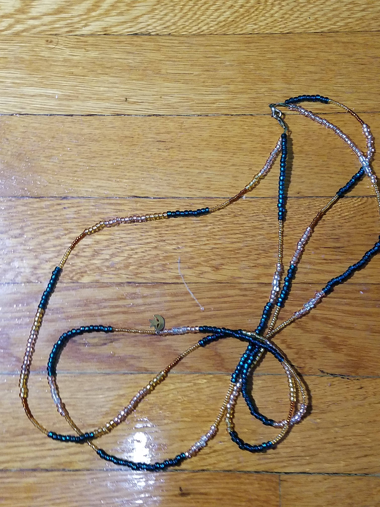

This is a jewelry making project and it is very simple. These beads are usually worn under the clothes around the waist.
Supplies
- 1 Roll of .33mm bead string wire (any color)
- 1 Wire cutter/ plier set for jewelry making
- Crimping pliers
- 1 Package of lobster clasps
- Glass seed beads in size 6/0 "E" and 11/0 in complementary colors (I suggest a minimum of three colors with at least 1 color being size 6/0)
- 1 Package of crimp tubes in size #2
- Measuring tape
- Bead stopper
 
